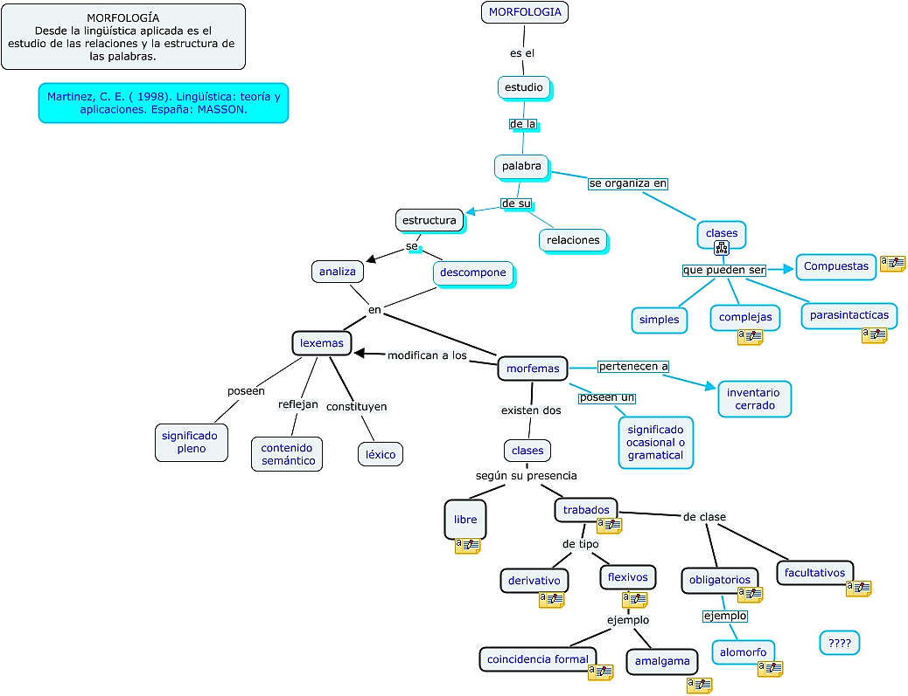

International
InternationalSłów kilka o pracach nad stenotypią polską
2014-10-28 | autor: flamenco108Widzę, że intensywność wpisów na tym blogu znacznie spadła. Ale nie dzieje się tak bez przyczyny. Właściwie przyczyn jest kilka, a może więcej, ale nie ze wszystkich gotów jestem się tutaj zwierzać ;-)
Zacznę i skończę na tym, że od jakiegoś czasu, w ramach płodozmianu zająłem się pracą nad polską stenotypią, czyli techniką stenografowania przy pomocy klawiatury.
Chyba już wspominałem o znakomitym projekcie amerykańskiej stenotypistki Mirabai Knight o nazwie Plover? Obserwuję go uważnie od lat kilkorga i muszę powiedzieć, że nawet udało się uzyskać mechanizm, który roboczo może spełnić potrzeby polskie, przynajmniej na początku prac nad stenotypią.
Ale: nie istnieje polski system stenotypii! W związku z powyższym postanowiłem taki zrobić. Nawiasem pisząc, chętni do pomocy mile widziani. Dzięki światłym sugestiom jednego zainteresowanego już moje prace posunęły się o cztery ziarnka piasku do przodu.
Kto czyta uważnie kategorię “stenotypia”, ten wie, że zajmuje to moją głowę od co najmniej trzech lat. Ale dopiero w ostatnim roku zaczęło zajmować bardziej, a to z przyczyny, że odręczny system SteMi osiągnął jaką-taką dojrzałość i mogę się nim posługiwać dość swobodnie (swoją drogą postanowiłem nauczyć go swoją prawą rękę, której do pisania dotychczas nie używałem - może to być ciekawe doświadczenie). Przyszła pora na klawiaturę.
W następnych wpisach postaram się ująć w proste słowa kilka zagadnień, jakie wymagają głębokiego rozważenia. Tutaj zacznę od jednej kwestii, którą obsługuje ukryty głęboko podproces mojego mózgu (bez współpracy z podświadomością ani rusz), czyli model techniczny pisania stenotypicznego.
Pobrałem ze stron SJP słownik liczący ponad 2,5 miliona słów (sic!). Jest to plik służący graczom w scrabble do rozstrzygania sporów podczas gry, więc m.in. zawiera słowa w różnych formach gramatycznych, co oczywiście zwiększa wydatnie liczbę obiektów słownika. Na bazie jednak tej bazy można wyrobić sobie wyobrażenie o skali trudności, jaka czeka polskiego stenotypistę. Komputer dzielił ten słownik na sylaby przez prawie dwa tygodnie (moja wina, źle zaprojektowałem program, który to miał robić!). Dzięki światłym sugestiom pewnego sympatyka w kilka (no, prawie 30) następnych sekund mogłem się dowiedzieć, ile prawdopodobnie sylab składa się na język polski: 24514 (słownie: dwadzieścia cztery tysiące pięćset czternaście). Oczywiście nie jest to liczba ostateczna. W trakcie, gdy piszę ten wpis, dwie sylaby wyszły z użycia, a sześć innych weszło na stałe do słownika. Tego się nie da tak łatwo zamknąć.
I dlatego tak sobie myślę, że jedyną sensowną techniką podejścia do polskiej stenotypii i tak ostatecznie będzie taka, która oprze się na czymś w rodzaju morfemów, bo one nie zmieniają się tak szybko, a jedynie z prędkością zmian języka:
Jedno to uzyskanie zbioru sylab do celów opracowania klawiatury, a
drugie, to podejście do techniki stenotypowania. Coraz bardziej się
skłaniam do podejścia
“morfologicznego”,
tj. takiego jakby utechnicznienia, np.:
przezwyciężalny = przez+zwycięż+alny
czyli
zwycięstwo = zwycięż+stwo = zwy+cię+[stwo/ctwo/two]
Komputer wszystko zniesie, więc zapewne w słowniku znajdą się inne podejścia na równych prawach, ale to wyjdzie w praktyce: zwycięstwo=zwy+cię+stwo = zwyć+[stwo/ctwo/two] = zwię+[stwo/ctwo/two]
a zatem: przezwyciężalny = [przez]+zwyć+[lny]
Czyli tak, jak uczyli w szkole - wyraz składa się z rdzenia oraz doklejek, czyli różnych -rostków (przyrostków [sufiksów], wrostków [afiksów] i przedrostków [prefiksów]).

Inne zagadnienie, to cząstki obce, którymi posługujemy się w języku polskim, np. aeronauktyka. Moim zdaniem docelowo trzeba będzie zbudować gotowe “znaki” (czyli akordy) dla takich cząstek:
aeronautyka = a+e+ro+na+u+ty+ka = ae+ro+nau+ty+ka = aer+nau+tyka
a zatem
aeronautyczny = aer+nau+ckny
aeronautyczna = aer+nau+ckna
speleologia = spe+le+o+lo+gia = spe+leo+log+ja = sple+log+ja
speleologiczny = spe+leo+log+ckny = sple+log+ckny
Tak czy owak, dorobienie się banku zsumowanych cząstek słowotwórczych to będzie oddzielna, ręczna robota w oparciu o podręcznik gramatyki. Jednak to może zmniejszyć liczbę sylab niezbędnych do wyuczenia się, aby praktycznie pisać.
To tyle na razie.
2014-10-28 autor: flamenco108